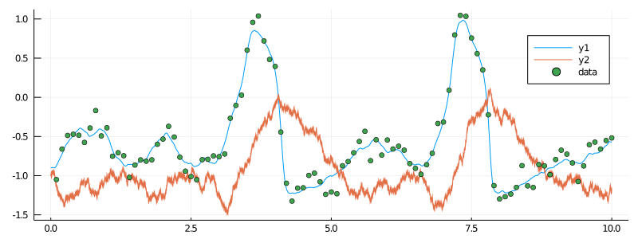

Preamble to tutorials
Different structs and methods introduced in the package DiffusionMCMCTools often aim to accomplish the same (or at least very similar) thing. The differences most often boil down to the degree of abstraction.
For instance, you might look at two structs: BiBlock and BlockCollection and consider a method draw_proposal_path! that is implemented for both of them. Conceptually, draw_proposal_path! does the same thing for both objects: it samples the diffusion paths; however, the result is slightly different. The reason is that BiBlock always points to a single block, whereas BlockCollection points to a collection of such blocks. Consequently, when we call draw_proposal_path! on a BiBlock, then a path is sampled on a single block, whereas if we call it on BlockCollection, it is sampled on multiple blocks.
The differences like this one are abound in the package DiffusionMCMCTools (though, in practice, there are really only three grades of such differences: when the methods are called on: BiBlock, BlockCollection or BlockEnsemble) and consequently, by choosing a different level of abstraction it is possible to write inference and smoothing algorithms in different ways.
To illustrate these differences most clearly we will unify the setting that is treated across all tutorials and present various takes on writing algorithms for problems of inference and smoothing.
The set-up
All tutorials are treating the FitzHugh–Nagumo model. Consequently, we will use the following preamble for all tutorials:
using GuidedProposals, DiffusionDefinition, ObservationSchemes, DiffusionMCMCTools
const GP = GuidedProposals
const DD = DiffusionDefinition
const OBS = ObservationSchemes
const dMCMCt = DiffusionMCMCTools
using StaticArrays, Random, Plots, Distributions
# seed with which all tutorials start
Random.seed!(100)
@load_diffusion FitzHughNagumo
@load_diffusion FitzHughNagumoAuxFor any blocking scheme we additionally need the following snippet for the function find_W_for_X! to work properly:
@inline DD.nonhypo(x, P::FitzHughNagumo) = x[SVector{1,Int64}(2)]
@inline DD.nonhypo_σ(t::Float64, x, P::FitzHughNagumo) = SMatrix{1,1,Float64}(P.σ)And for simplicity, for all inference algorithms we will be updating a single parameter $γ$ only. We will thus need to indicate which parameters are considered to be variable as follows
DD.var_parameter_names(::FitzHughNagumo) = (:γ,)
DD.var_parameter_names(::FitzHughNagumoAux) = (:γ,)As a good practice for more complicated models (though not strictly necessary in our settings) we will also use a package OrderedCollections for indicating which parameters the MCMC chain should be updating, so we will load it in alongside other packages.
Full code for the set-up
Consequently, all tutorials should run correctly if you start from calling the following lines:
using GuidedProposals, DiffusionDefinition, ObservationSchemes, DiffusionMCMCTools
const GP = GuidedProposals
const DD = DiffusionDefinition
const OBS = ObservationSchemes
const dMCMCt = DiffusionMCMCTools
using StaticArrays, Random, Plots, Distributions, OrderedCollections
# seed with which all tutorials start
Random.seed!(100)
@load_diffusion FitzHughNagumo
@load_diffusion FitzHughNagumoAux
@inline DD.nonhypo(x, P::FitzHughNagumo) = x[SVector{1,Int64}(2)]
@inline DD.nonhypo_σ(t::Float64, x, P::FitzHughNagumo) = SMatrix{1,1,Float64}(P.σ)
DD.var_parameter_names(::FitzHughNagumo) = (:γ,)
DD.var_parameter_names(::FitzHughNagumoAux) = (:γ,)The data
For most tutorials we will use the same dataset that we generate from the target model as follows:
θ = [0.1, -0.8, 1.5, 0.0, 0.3]
P = FitzHughNagumo(θ...)
tt, y1 = 0.0:0.0001:10.0, @SVector [-0.9, -1.0]
X = rand(P, tt, y1)
obs_scheme = ObsScheme(
LinearGsnObs(
0.0, (@SVector [0.0]);
L=(@SMatrix [1.0 0.0]),
Σ=(@SMatrix [0.01])
)
)
data = collect(obs_scheme, X, 1000)
recording = build_recording(P, data, 0.0, KnownStartingPt(y1))
plot(X, Val(:vs_time), size=(800, 300))
scatter!(map(x->x.t, data), map(x->x.obs[1], data), label="data")
The only exception will be the tutorial for the BlockEnsemble in which not one, but multiple trajectories from the target model will be used.
Displaying results
For displaying results we will make use of some plotting functions that we define below.
For improving the plotting performance we will use the following routines:
function glue_paths(XX)
XX_glued = trajectory(
glue_containers( map(x->x.t, XX) ),
glue_containers( map(x->x.x, XX) ),
)
end
function glue_containers(xs)
glued_xs = collect(Iterators.flatten(map(x->x[1:end-1], xs)))
append!(glued_xs, [xs[end][end]])
glued_xs
endAnd for displaying imputed trajectories (which already make use of routines above):
function plot_imputed_trajectories(paths)
convenient_paths = glue_paths.(paths)
col = ["#581845", "#900C3F", "#C70039", "#FF5733", "#FFC300"]
p = plot(size=(1000, 500))
for path in convenient_paths
plot!(p, path, Val(:vs_time), alpha=0.4, label="", color=[col[3] col[1]])
end
plot!(X, Val(:vs_time), color=[col[5] col[4]], linewidth=[3 0.5], label=["underlying X₁" "underlying X₂"])
scatter!(p, map(x->x.t, data), map(x->x.obs[1], data), label="data", markercolor=col[5])
display(p)
end